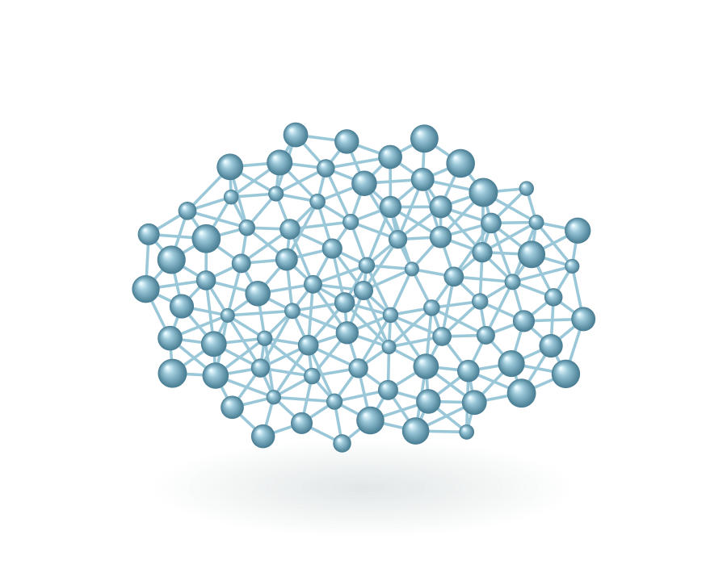
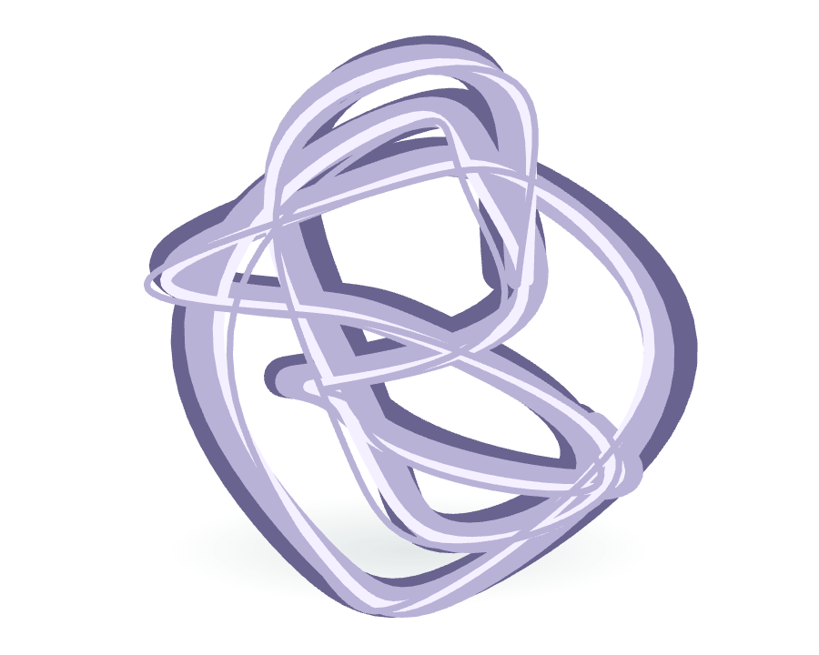
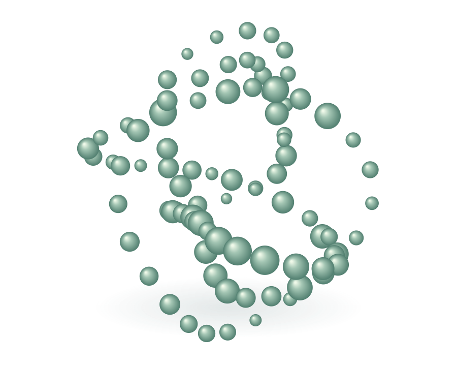
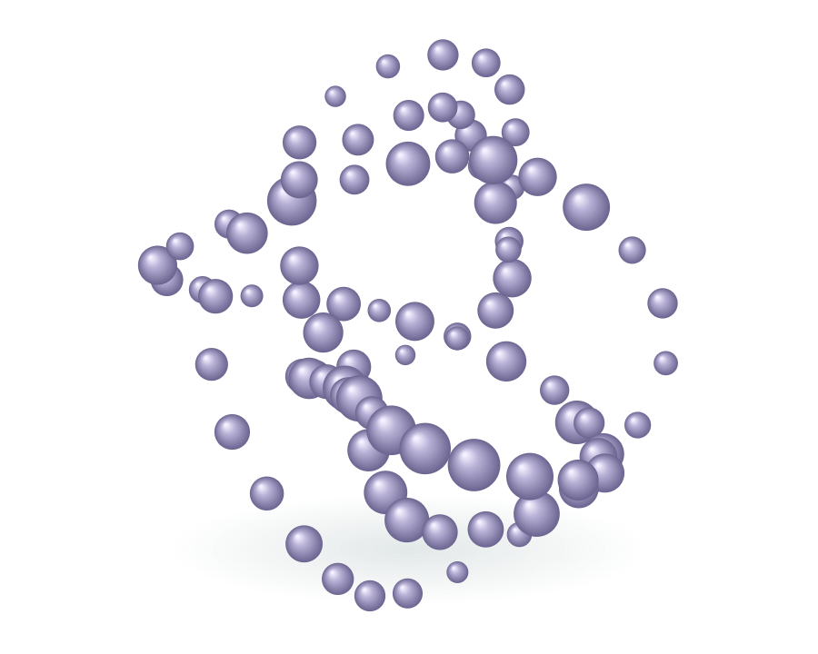
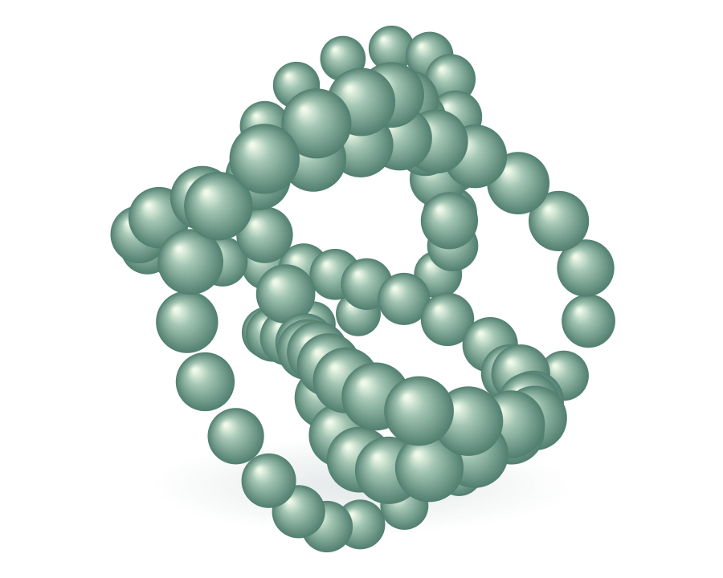

Reconhecer o que merece avançar.
Evidências computacionais para orientar a próxima decisão em pesquisa biomolecular.

Por que trabalhar com a ArgosAI?
Uma abordagem organizada em torno da decisão que sua equipe precisa tomar.
Critérios que podem ser examinados
Discutimos premissas, fontes e critérios de seleção para que a priorização tenha uma justificativa compreensível.

Evidências vistas em conjunto
Integramos sinais relevantes ao contexto do projeto, preservando as limitações de cada análise e as incertezas da conclusão.

Entregas definidas com você
A pergunta, os dados disponíveis e a decisão esperada orientam a construção do escopo e dos entregáveis.

Conheça nossos produtos em desenvolvimento.
Da pesquisa terapêutica ao diagnóstico veterinário, quatro frentes para avançar com evidências.
Programas em desenvolvimento, ainda sem disponibilidade para uso clínico ou comercialização.
Pesquisa terapêutica · Desenvolvimento computacional
ASO para leishmaniose
Abordagem com oligonucleotídeos antissenso voltada à investigação de alvos de Leishmania. O programa explora candidatos terapêuticos e sua progressão para avaliação experimental.
Conhecer: ASO para leishmaniose
Pesquisa em vacinas · Candidata em desenvolvimento
Vacina de peptídeos para leishmaniose
Programa de vacina baseada em peptídeos, com seleção e priorização computacional de candidatos para investigação da resposta imune contra Leishmania.
Conhecer: Vacina de peptídeos para leishmaniose
Pesquisa em formulações · Em desenvolvimento
Formulação para doença de Chagas
Frente dedicada ao desenvolvimento de uma formulação para investigação na doença de Chagas, ampliando o portfólio de pesquisa para Trypanosoma cruzi.
Conhecer: Formulação para doença de ChagasDiagnóstico veterinário · Protótipo
Testes rápidos para erliquiose e babesiose
Protótipo voltado ao desenvolvimento de testes rápidos para erliquiose e babesiose, conectando pesquisa biomolecular às necessidades do diagnóstico veterinário.
Conhecer: Testes rápidos para erliquiose e babesioseAntes do próximo experimento, uma escolha.
Entre muitos candidatos, quais merecem a atenção da sua equipe?
A ArgosAI integra análises de sequência, conservação, estrutura e imunologia para apoiar essa escolha. Cada priorização deve vir acompanhada de critérios, evidências e limitações.
Entenda nossa abordagemExplore a abordagem.
Conheça as aplicações, entenda o trabalho proposto e visualize uma possível entrega.
Áreas de atuação Capacidades de pesquisa Relatório demonstrativoO próximo passo pode ser conjunto.
Duas formas de conectar nossa abordagem à sua pesquisa.
Projetos sob demanda
Uma pergunta definida, uma análise direcionada e entregáveis construídos para a decisão da sua equipe.
Conhecer os projetosCodesenvolvimento
Capacidades complementares para investigar candidatos e desenvolver programas de pesquisa terapêutica, vacinas, formulações e diagnóstico.
Explorar a colaboraçãoCiência que pode ser examinada.
A proposta é apoiar a seleção de candidatos. A comprovação de eficácia depende da pesquisa experimental.
Aplicação inicial
Priorização de antígenos para pesquisa em vacinas contra leishmaniose.
Estágio atual
Protótipo computacional. Validação experimental e benchmarks comparativos ainda pendentes.
Conheça a ciência. Compartilhe a visão.
Explore as evidências disponíveis e leve uma apresentação da ArgosAI para a próxima conversa com sua equipe.
Ciência e resultados Novidades e materiais Kit de imprensa Baixar apresentação institucional (PDF)Tudo começou com Marley.
Uma experiência pessoal com a leishmaniose se transformou em uma pergunta de pesquisa.
Nosso CEO Pedro deu início ao projeto após a perda de seu cão Marley. Hoje, essa iniciativa ganha uma nova identidade: ArgosAI.
Conheça a nossa história Conheça a equipe Trabalhe conosco